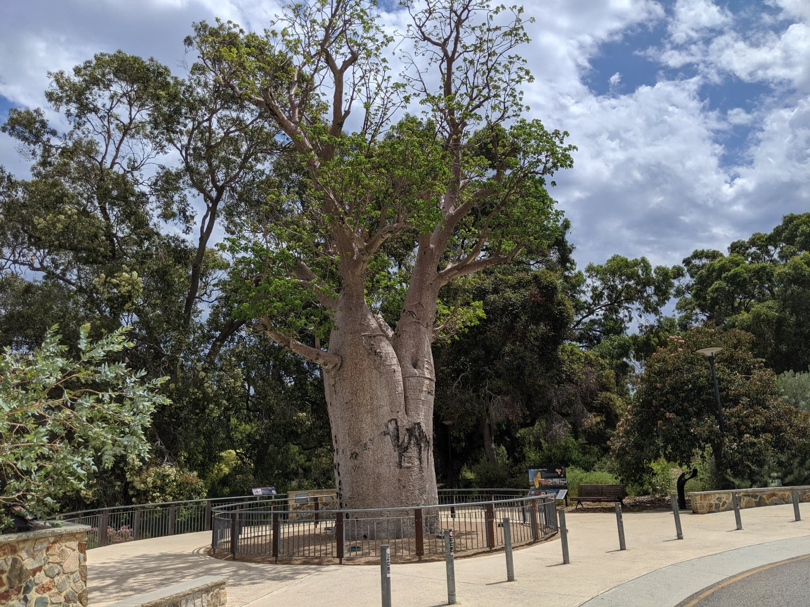
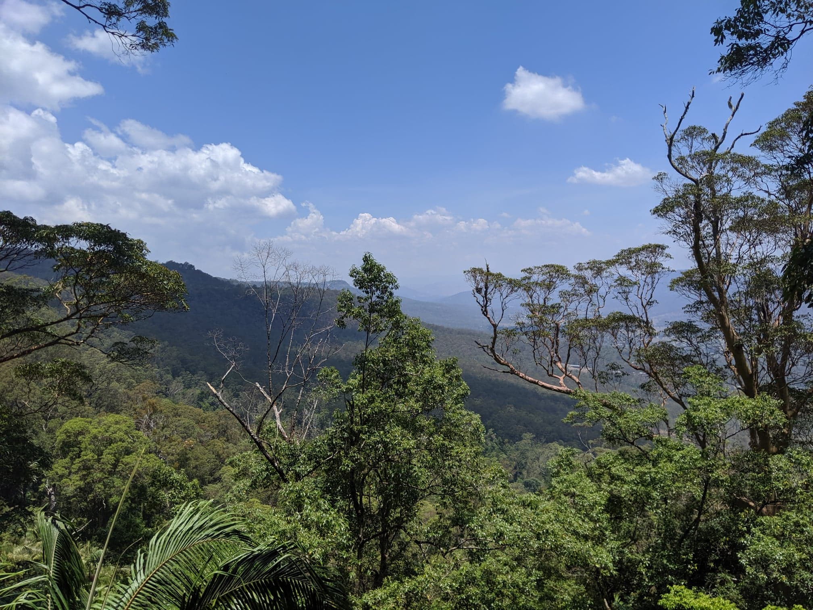

Perth botanical gardens
Gija Jumulu refers to the Gija people, the traditional owners of the land where the boab tree originated from in the East Kimberley. 'Jumulu' means boab tree.
show location
Brodie Hueppauff
Jan 18 2019
Melbourne Church
Melbourne church I found while walking around the university of Melbourne
show location
Brodie Hueppauff
feb 18 2019

Mt tamborine lookout
Tamborine trail walk found a lookout close to A waterfall